亀甲神社の道祖神神体
淀江町亀甲のサイノカミ
最終更新：
かめのこ。コガの巨木を神木とし荒神を祀る亀甲神社に、なんと11基もの道祖神神体が集められています。
その密度は米子市内どころか、山陰両県を見渡してもぶっちぎりで、淀江町（現在は米子市）の有形民俗文化財に指定されています。
そして数だけでなく種類も豊富。
トラディショナルなデザインのものから奇抜なものまで実にバラエティに富んでおり、特にこの辺りでは珍しい陽石まであったりします。
さらにおかめが描かれている依代には重大な秘密が隠されており…
向かって左手前から順に見て行きます。
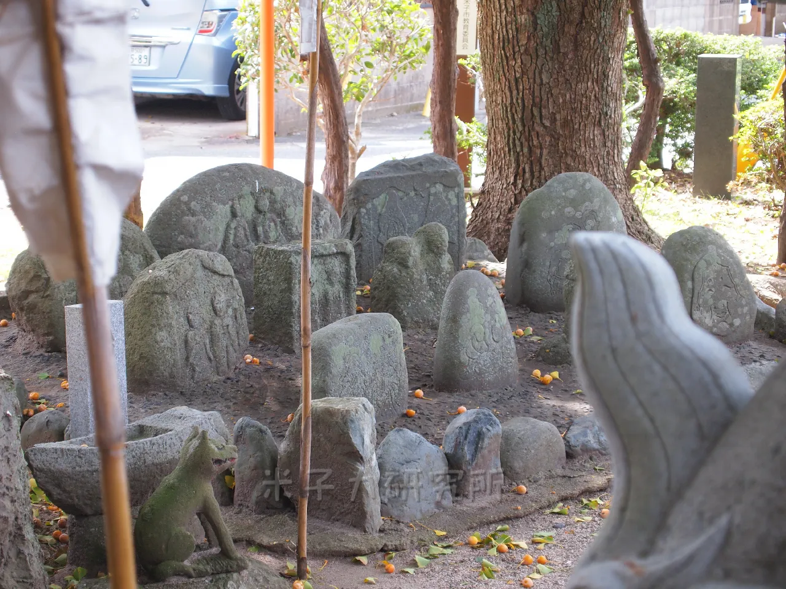
2026-09-25 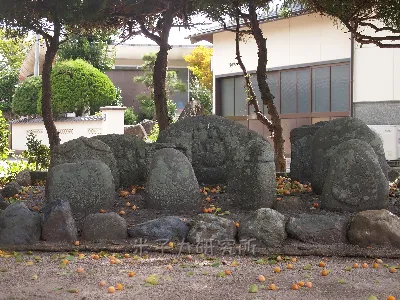
2026-09-25 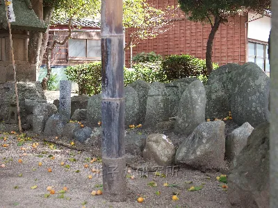
2026-09-25 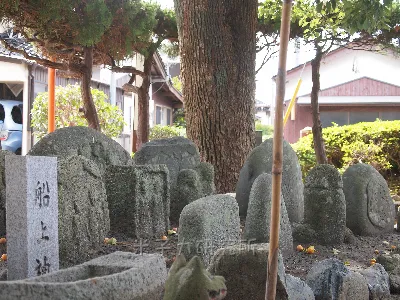
2026-09-25 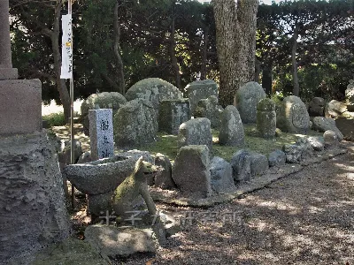
2022-04-17 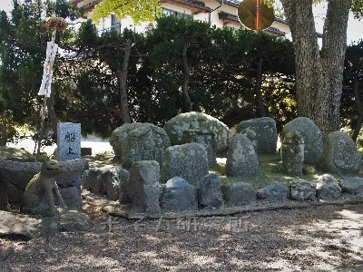
2022-04-17 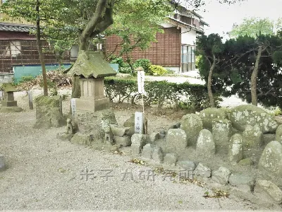
2021-05-10
- 地域
- 鳥取県米子市淀江町
- 目印
- 亀甲神社
- 対象
- 双体道祖神 × 9基
- 陽石 × 1基
- おかめ（陰石） × 1基
- 参考
- 塞神考 No.322
- 淀江みちくさ手帖
- 淀江町誌
- 淀江風土記
昭和53年11月10日、9体のサイノカミ（当時）が一括して淀江町指定民俗文化財となりました。淀江風土記
女神が宝珠を持っている双体道祖神（1列目左端）
小型の自然石に素朴なタッチで双体神座像が線刻されています。
向かって右の男神は冠と笏。
左の女神は宝珠を持っているのが特徴です。
文字は確認できません。
- 類型
- 墓下タイプ
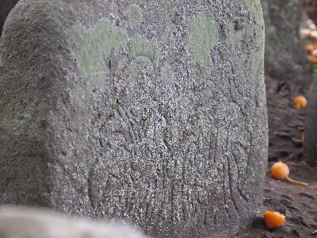
2026-09-25 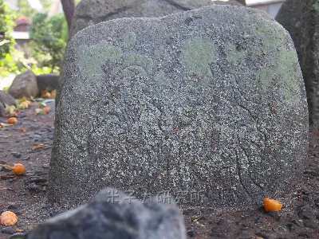
2026-09-25 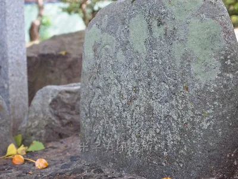
2026-09-25 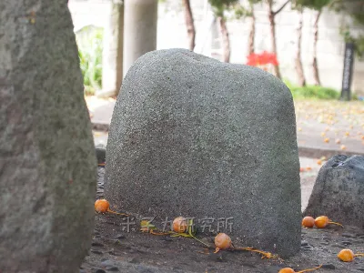
2026-09-25 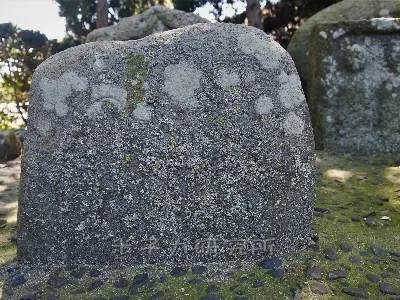
2026-09-25 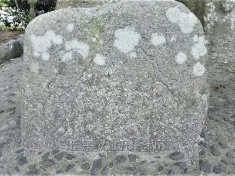
2026-09-25
和歌の彫ってある双体道祖神（1列目左から2番目）
小型の自然石。
素朴なタッチで双体神座像が線刻してあります。
大山町以東でよく見かける女神が横を向いた図案です。
もう自力では読めませんが、ギリギリ文字があるのがわかります。
像の上に和歌「ただびとにかみ いざしたまへ 才のかみさん」
そして裏には文化十三子 忠佐衛門と彫ってあるのだそうです。
※伯耆のサイノカミ様のページを参考にさせていただきました
- 造立
- 文化十三子
- 類型
- 横向きタイプ
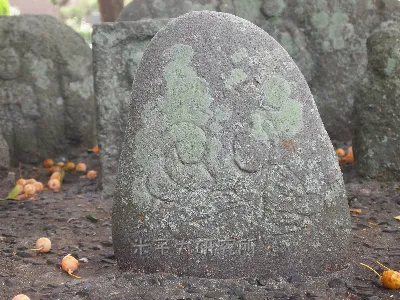
2026-09-25 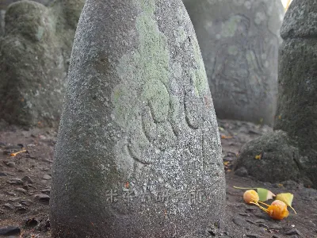
2026-09-25 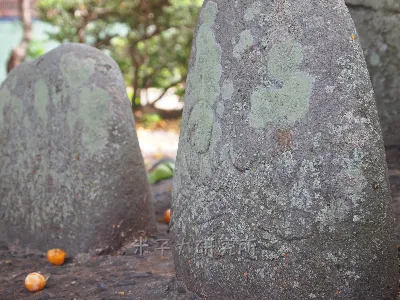
2026-09-25 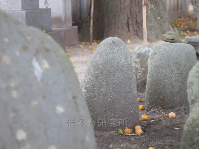
2026-09-25 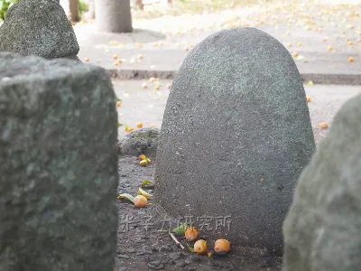
2026-09-25 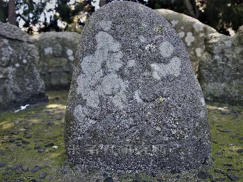
2022-04-17 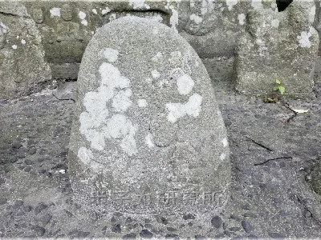
2021-05-10
陽石（1列目左から3番目）
さてさて、みんな大好き陽石です！
宝篋印塔の一部を転用したり、他の石造物が風化した結果そのように見えることとなった訳ではなく、最初から淫祠として作られた陽石というのは、私の知る限り米子市内ではここにのみ現存しています。
ご丁寧なことに 玉石が二つ付属 しておりまさに完全体。
こういった淫祠を見るにつけ、また祭具として使用される草鞋が性のシンボルでもあるなども併せて考えると、ワラ馬やワラ苞（わらづと）ですらいったい何のメタファーなのか知れたものではないと思ったりもします。
わらづとって、わらを結わえた束のことですよね？
開いたら見たまんまじゃな（ﾓｶﾞﾓｶﾞｯ）
そこまでだっ！
何を言い出すんだキミは…（ｱﾀﾌﾀ）
それでは次いってみましょう💦
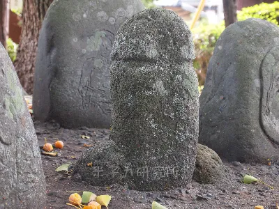
2026-09-25 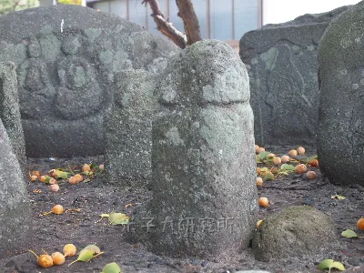
2026-09-25 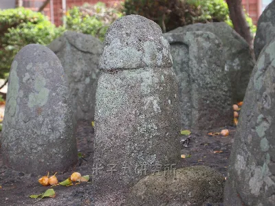
2026-09-25 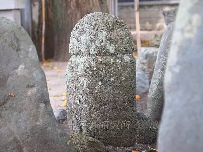
2026-09-25 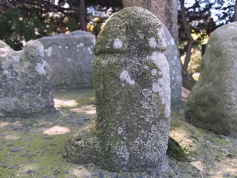
2022-04-17 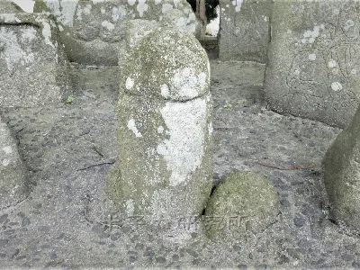
2021-05-10
おかめ／陰石（1列目右端）
こちら平成2年に新たに加わりました。
おかめです。
因みにおかめと言えば天鈿女命が起源なんだそうですね。
へー！
そう言われてみると天鈿女ってお多福顔で描かれることが多いような…。
このサイト内にも沢山ありますので元気な人は探してみてください。
そしてここからが大事なところ。
実はこのおかめ、陰石になっています。
裏側を見てみると…
…
…
やっぱりやめた。
次の説明に移ろう、ぽんきちくん。
えー！
なになに？
どうなっ（ﾓｶﾞﾓｶﾞｯ）
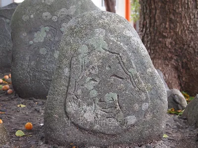
2026-09-25 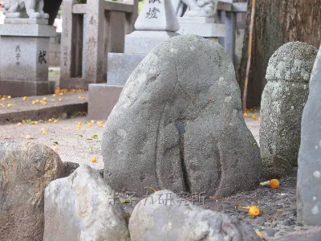
2026-09-25 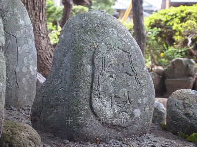
2026-09-25 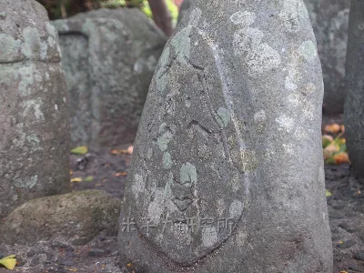
2026-09-25 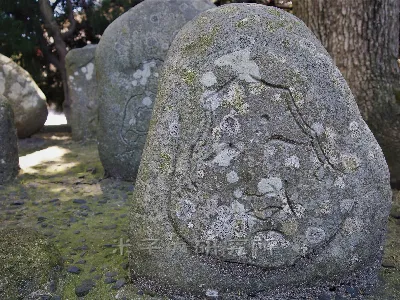
2022-04-17 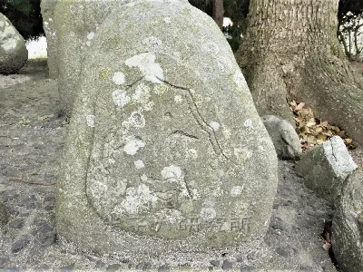
2021-05-10
烏帽子をかぶった双体道祖神（2列目左端）
中型。
駒型の加工石に神前幕のついた彫込み。
下に双体神立像が浮彫りされています。
像の左右に文字が彫ってあるように見えますが読めません。
- 類型
- 烏帽子タイプ
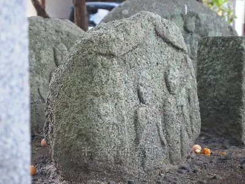
2026-09-25 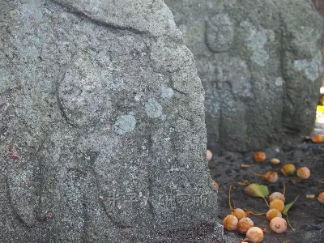
2026-09-25 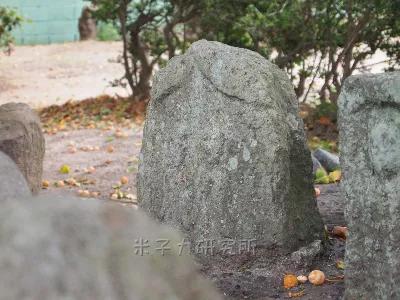
2026-09-25 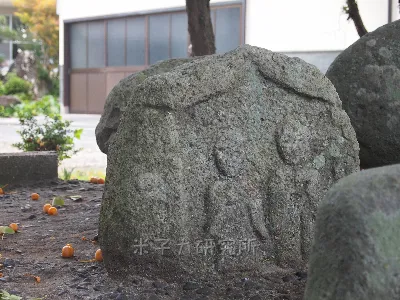
2026-09-25 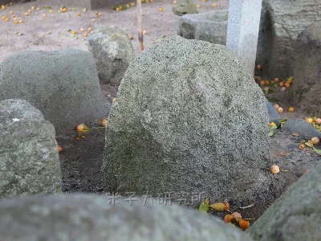
2026-09-25 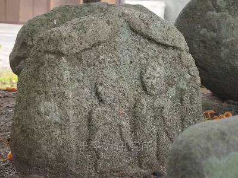
2026-09-25 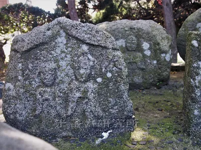
2022-04-17 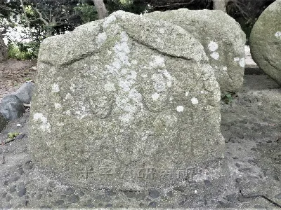
2021-05-10
ポータブル双体道祖神（2列目左から2番目）
中型。
方形の切石に方形の彫込み、中に双体神立像が浮彫りされています。
摩耗が激しく詳細不明ですが、
正面向きの立像
首のくびれ
袂が長すぎず三角形でもない
などの特徴から烏帽子をかぶっている図案ではないかと思います。
小型で四角く加工されていることから、持ち運びを想定したポータブルサイノカミであるとも想像できます。
- 類型
- （たぶん）烏帽子タイプ
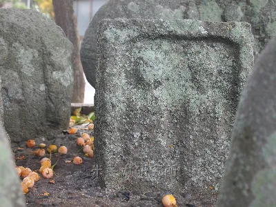
2026-09-25 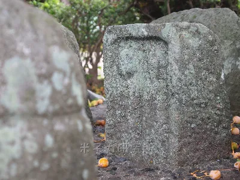
2026-09-25 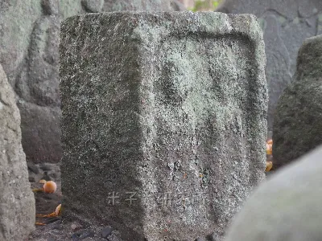
2026-09-25 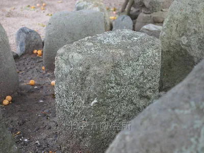
2026-09-25 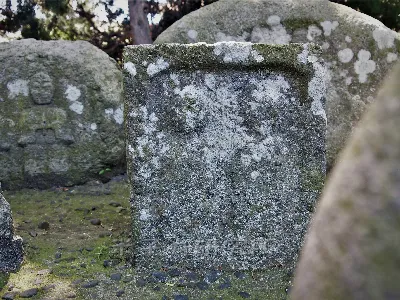
2022-04-17 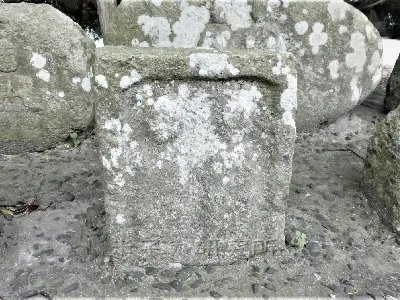
2021-05-10
丸彫りの双体道祖神（2列目左から3番目）
小型。
丸彫りの双体神立像です。
風化が激しく詳細不明ですが、他の丸彫りタイプと大凡の形状、サイズが似通っています。
- 類型
- 烏帽子（丸彫り）タイプ
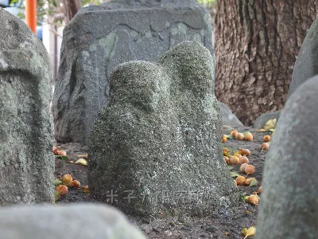
2026-09-25 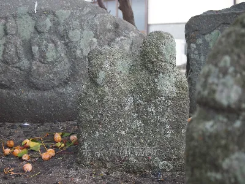
2026-09-25 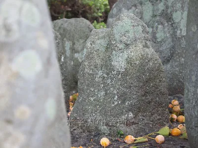
2026-09-25 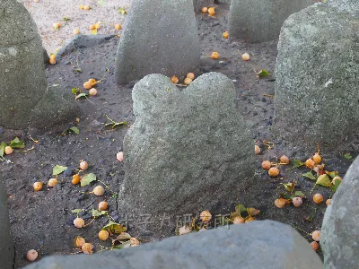
2026-09-25 2022-04-17 2021-05-10
タキシード双体神（2列目右端）
中型、角の取れた川石に双体神の半身像が線刻されています。
…
…何も不自然なところはありませんね？
限りなくタキシードとウェディングドレスを着た現代人カップルに見える点を除いては。
これからブーケトスでもしようかという気配すら感じさせる二人です。
おめでとう！ﾊﾟﾁﾊﾟﾁ🎉
平成2年に新たに加わった変化球の依代です。
2026-09-25 2026-09-25 2026-09-25 2026-09-25 2022-04-17 2021-05-10
烏帽子をかぶった中型の双体道祖神（3列目左端）
中型。
ごつごつした石の前半分をざっくりと整え、双体神立像が浮彫りされています。
向かって右の男神は烏帽子をかぶっており笏を。
女神はおそらくですが神楽鈴を持っています。
類型の中でも特に淀江で多く見られる図案です。
- 類型
- 烏帽子タイプ
2026-09-25 2026-09-25 2026-09-25 2026-09-25 2026-09-25 2022-04-17 2021-05-10
仲良く座った双体道祖神（3列目左から2番目）
大型。
横長の自然石に双体神座像が浮彫りされています。
もともとのディテールが曖昧だったのか、はたまた風化が進んでいる為か詳細は不明。
やや斜めに向かい合って窮屈そうに座っています。
またかろうじて女神のヘアスタイルが単髻（シングルのおだんご頭）に見えます。
2026-09-25 2026-09-25 2026-09-25 2026-09-25 2026-09-25 2026-09-25
神前幕の下で向かい合う双体道祖神（3列目右端）
中型。
大雑把に四角い石の前部分を方形に加工し、美しい神前幕、またその下に双体神立像が浮彫り線刻されています。向かって右の男神はおそらく鷲鼻で佩刀。
女神は由布を所持しています。
彫り込みの左外に文字があり～〇〇〇〇門
ただ、ここで書いておかないと、これ以降今以上に読みやすくなることはあり得ませんので、敢えてぐっと正確性のハードルを下げると
～仁右〇〇門と読め…るかもしれない。
すみません、自信ありません。
- 類型
- 猿田彦タイプ
2026-09-25 2026-09-25 2026-09-25 2026-09-25 2026-09-25 2026-09-25 2026-09-25
亀甲神社について
天保の頃、新田開墾の際に出雲国須佐神社の分霊を勧請して、荒神宮と称し祭ったのがはじまりです。
明治元年の神社改正により廃社。
その後の請願により島根県から許可を得て明治14年再建。
※その頃鳥取県は無かった
本殿以外には船上神社、大神山神社奥宮を祭る自然石、金毘羅大権現、秋葉神社、大山さんがあります。
以下の写真には鳥居の写っているものがありますが、下のほう65㎝ぐらいのところまで変色しているのがお分かりいただけますでしょうか？
これは大正7年および昭和9年に佐陀川が決壊した際に起こった水害で浸かった跡なのだそうです。
怖…
2026-09-25 2026-09-25 2026-09-25 2026-09-25 2026-09-25 2026-09-25 2026-09-25 2026-09-25 2026-09-25 2026-09-25 2026-09-25 2026-09-25 2026-09-25 2026-09-25